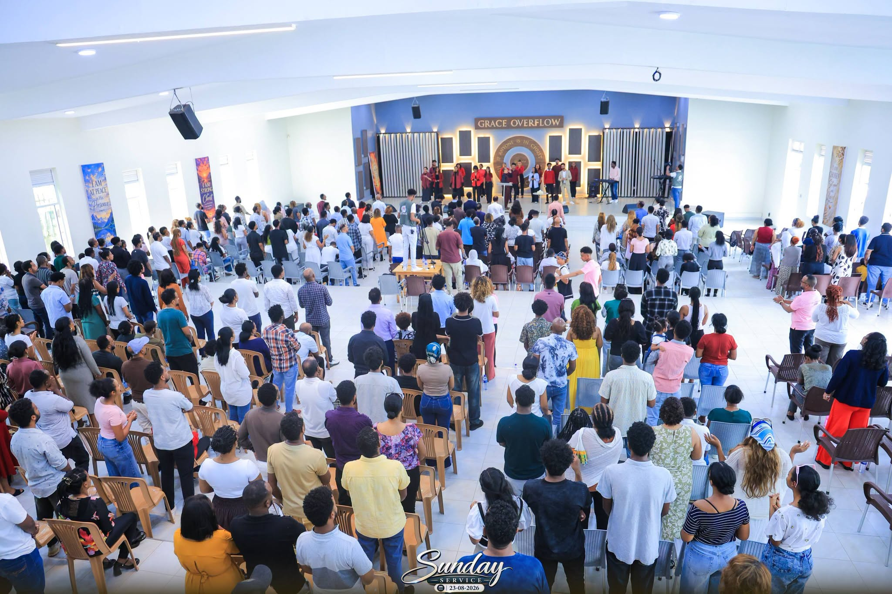

ብዛዕባና
የሱስ ጥራይ ንሰብኽ
እዚ ካብ መጀመርታ ዝነበረ ቃልና እዩ። ካልእ ኣጀንዳ የብልናን።
ታሪኽና
A church for people far from home
Grace Overflow gathers in Kampala, in a hall it fills every Sunday, and it gathers in Tigrinya and Amharic, the languages its people think and pray in.
Most of this congregation did not choose Kampala. They arrived here. And on a Sunday morning, a room where the worship is in your own language is not a small thing. It is the closest thing to home many of them have.
What began in that room now reaches much further. The Sunday service streams to Birmingham, Frankfurt, Toronto and Tel Aviv. In September 2025 the church took Grace Overflow to Birmingham in person. The room on Ggaba Road is still the centre; it is simply no longer the edge.

መራሕቲ
Who leads this church
People trust a church they can put a face and a name to.
Senior Pastor
Name to be supplied
Associate Pastor
Name to be supplied
Worship Lead
Name to be supplied
Children's Lead
Name to be supplied
እምነትና
What we believe
Stated plainly, so nobody has to guess.
- The Bible is the inspired Word of God and our final authority in faith and life.
- There is one God, eternally existing as Father, Son and Holy Spirit.
- Jesus Christ is fully God and fully man, crucified, buried, risen and returning.
- Salvation is by grace through faith in Jesus Christ alone, not by works.
- The Holy Spirit indwells, gifts and empowers every believer.
- The Church is one body, gathered across every language and nation.
ውሕስነት
Safeguarding & privacy
Children are supervised by volunteers who have been vetted and trained. Any concern can be raised directly with leadership, and it will be taken seriously.
We collect the least data we can. Prayer requests can be sent with no name attached at all, and we never publish a photograph of a member who has asked us not to.